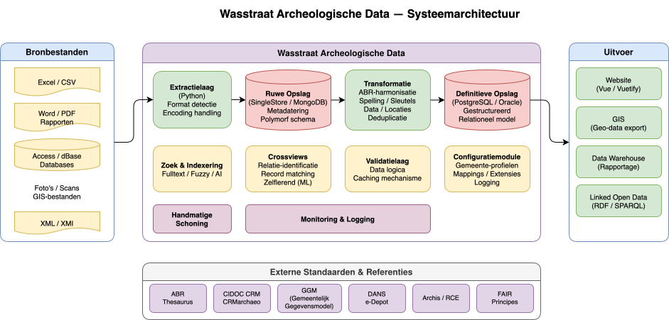

Systeemarchitectuur¶
Overzicht¶
Het Wasstraat Archeologische Data-systeem is een geïntegreerde gegevensplatform dat archeologische informatie uit meerdere bronnen verzamelt, transformeert en beschikbaar stelt via diverse outputs. Het systeem volgt een data pipeline-benadering met strikte scheiding van concerns tussen extractie, opslag, transformatie en uitgave.

Kernarchitectuur¶
Het systeem is opgebouwd uit de volgende lagen:
1. Bronnen (Sources)¶
- Eenmalige imports: Historische gegevenssets
- Periodieke bronnen: Continu of regelmatig bijgewerkte gegevens
2. Extractielaag (Extraction)¶
Converteert diverse gegevensbronnen naar een gestandaardiseerd formaat. De extractielaag: - Leest data uit heterogene bronnen - Voert basale validatie uit - Behoudt alle originele informatie
3. Opslag - Ruw (Raw Storage)¶
Opslag van onbewerkte data direct na extractie: - MongoDB: NoSQL opslag voor semi-gestructureerde data - SingleStore: Kolom-georiënteerde opslag voor queryperformance
Originele gegevens worden altijd bewaard zonder aanpassingen.
4. Transformatielaag (Transformation)¶
Normaliseert en harmoniseert de opgeslagen data: - ABR-harmonisering: Afstemming met het ABR-thesaurus - Spelling: Gestandaardiseerde schrijfwijzen - Sleutel/Datum/Locatie harmonisering: Consolidatie van redundante en inconsistente gegevens
5. Opslag - Definitief (Definitive Storage)¶
Eindopslag in gestructureerde relationele databases: - PostgreSQL: Open-source relationele database - Oracle: Enterprise-grade relationele database
6. Outputs¶
Diverse gebruikersfacing applicaties: - Website: Webinterface voor publieke toegang - GIS: Geografische informatie-systemen - Data Warehouse/Reporting: Analytische dashboards en rapportage
Ondersteunende Componenten¶
Handmatige Schoonmaakinterface¶
Interface voor menselijke validatie en correctie van gegevens, op kritieke punten in de pipeline.
Clientonderhoudinterface¶
Beheersmodule voor het beheren van bronconfiguraties, gebruikers en systeeminstellingen.
Gegevenspreservatie¶
Een kernprincipe van het systeem is dat originele gegevens altijd behouden blijven. Dit maakt het mogelijk om: - Transformaties op elk moment opnieuw uit te voeren - Fouten in transformatie-logica op te sporen en te corrigeren - Audit trails in stand te houden - Terugkeer naar bron-integriteit te garanderen
Data Governance¶
Het systeem implementeert strakke gegevensbeheer: - Strikte scheiding tussen ruw en gereinigd - Versionering van transformatielogica - Volledig traceerbare transformatiegeschiedenis - Geïsoleerde correctiebewerkingen in de handmatige schoonmaakinterface